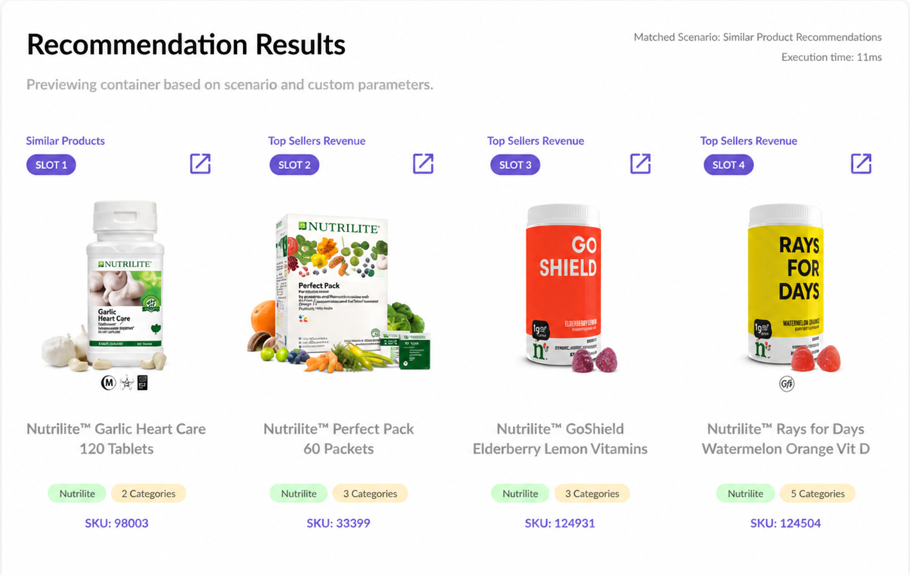

Useful, usable, and three months to first market.
Amway is a global direct-sales business with sixty years of operations across nearly a hundred markets. By the time KIS Solutions was hired, the company had a tangle of internal tools — content compliance, product catalogs, recommendation engines — built across years, none of them speaking the same language. The brief that opened the engagement was modest: build a Product Recommender that could outperform the enterprise software they were licensing.
I came in as Design Lead and Manager. Two designers reported to me; I worked hands-on across product strategy, UX, and DesignOps. The job for the first three months was a single product: the Amway Product Recommender (APR). The APR was a Recommendation Configuration Software — an internal tool the merchandising and data teams used to tune recommendation models for specific user profiles. Configurable, fast, capable of handling forty-plus recommendation models, and built to survive peak commerce traffic on the customer-facing site that consumed its outputs.

We shipped APR to its first market in three months. It saved millions in commercial licensing fees, outperformed the enterprise software in speed and conversion, and drove twenty-four percent of all items sold on the Amway platform — the kind of measurable outcome that earns a longer engagement. Within months, the client expanded the scope. The complementary tools came next: a manual model configuration engine for hand-tuning recommendation parameters; a merchandising rules manager for visibility and category overrides; a Product Information Management system; a Data Catalogue with big-data query and visualization; a Content Compliance Reviewer. Six tools that, together, were the operating environment merchandisers and data teams used every day.